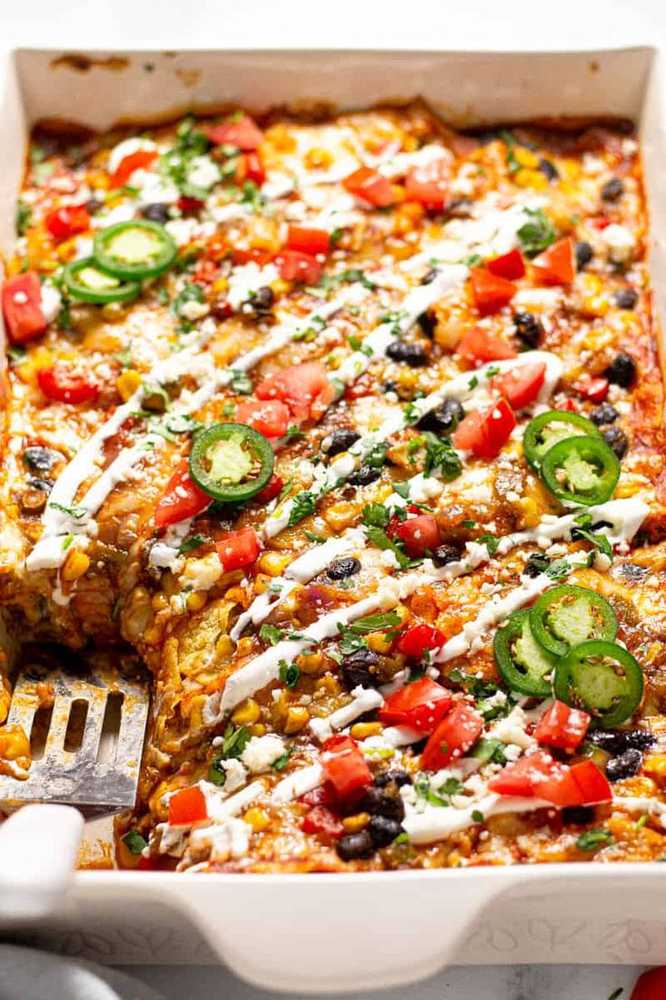

Vegan Enchilada Bake

Description
Super filling and suprisingly easy to make! This is addictive though so be careful! Last thing you want is to end up on the streets.
Ingredients
- 1 cup crushed tomatoes
- 2 cups cooked white rice
- 1 (15 ounce) can refriend beans
- 1/2 (16 ounce) can diced tomatoes and green chiles
- 8 ounces sliced seitan (or other mock meat)
- 1/2 (8 ounce) package shredded mozzerella-style vegan cheese (or more I'm not a cop)
- 9 (6 inch) corn torillas
- 1 (15 ounce) can green enchilada sauce
Steps
- Preheat oven to 350f
- Pour crushed tomoatoes into the bottom of a casserole dish. Layer 1/3 of the rice, 1/3 of the beans, 1/3 of the diced tomatoes, 1/3 of the mock meat, 1/3 of the vegan cheese, 1/3 of the torillas, and 1/3 of the enchilada sauce into the dish, in that order
- Repeat step 2
- Repeat step 2 again
- Bake in the preheated oven until vegan cheese metls and casserole is heated through, about 45 minutes.
Homepage